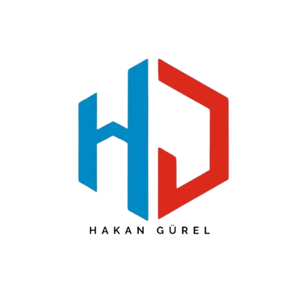

2015'ten bu yana gayrimenkul sektöründe güvenin adı
Mülkünüzü satışa götüren güçlü el: Hakan Gürel
Ben Hakan Gürel, Antalya merkezli 2015 yılında temelini attığım emlak sektöründe lisanslı emlak danışmanıyım. Arsa yatırımı, kentsel dönüşüm ve ticari mülk alım-satımında uzmanlaştım. Yatırımınıza değer katmak için buradayım.
Telefon: +90 532 170 16 86
E-posta: hakangurel@remaxaqua.com
WhatsApp ile İletişime Geç
Instagram: @aquaremax, @hakangurelremax, @arsaavcısı, @antalyakentseldönüşüm, @antalyasatılıkdaire, @hakangurel07